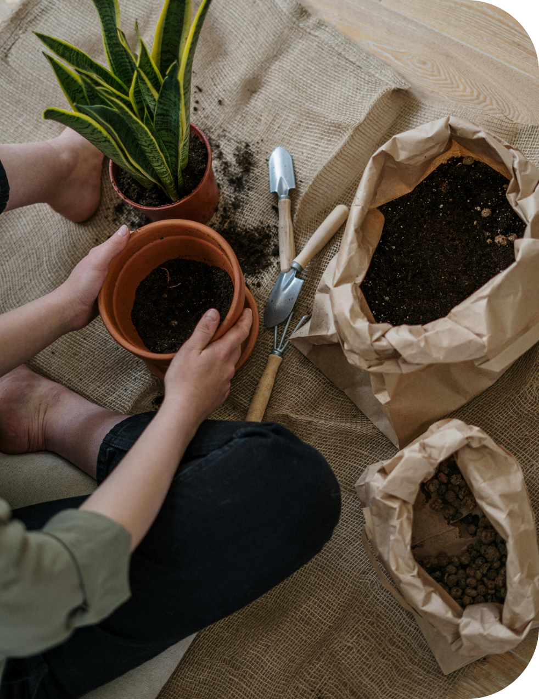
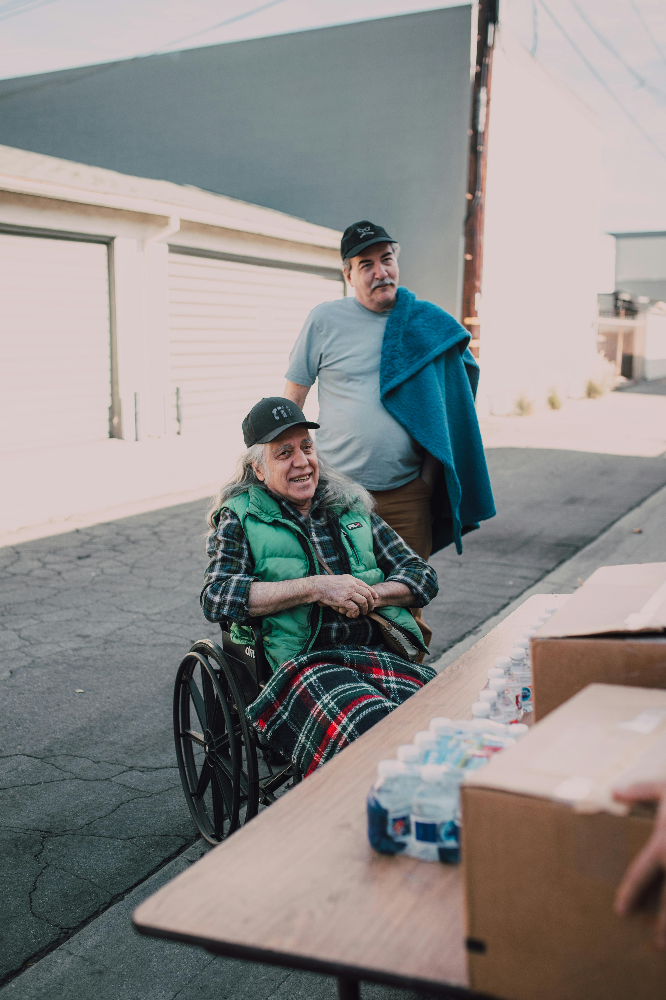

1000 Plant
in Blater
Join us make
precious smile
please fill in your information
1000 Plant
in Blater
please fill in your information
Krikil Peduli (Kipli) is present as a platform that accommodates the community in raising funds and also assistance for people in need. Krikil Peduli was born as a response to the unheard cries of affected communities